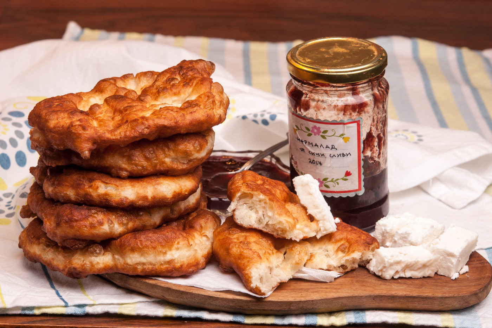

Да, тази лесна рецепта за тесто с мая и сода, звучи като рецепта “всичко в едно”! Хем е рецепта за тесто с мая, хем е рецепта за тесто със сода. А като добавим, че освен, че е рецепта за тесто с прясно мляко е и рецепта за тесто с кисело мляко, спокойно може да я наречем универсалната и богата рецепта за тесто. И наистина, полученото тесто е универсално. С него може да приготвите пухкави улични мекици, пържени питки със сирене или питки с друга плънка, солени кифлички, а дори и пица. С други думи, имайте предвид тази лесна рецепта за тесто, когато планирате семейната закуска за уикенда.
📖
Лесна
⏱️
20 мин.
🍴
20